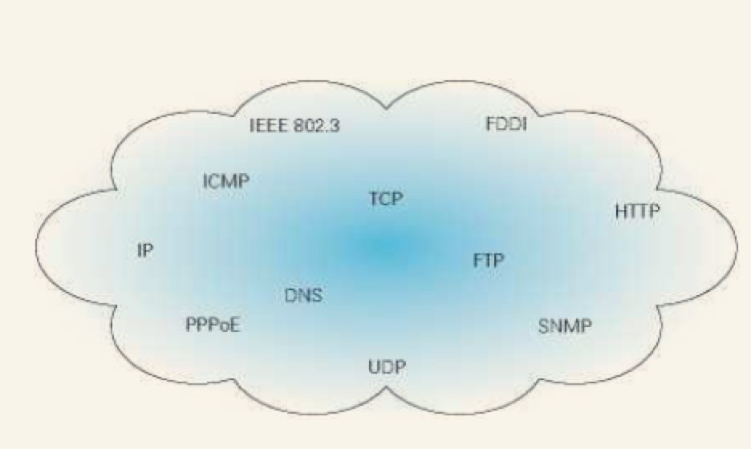
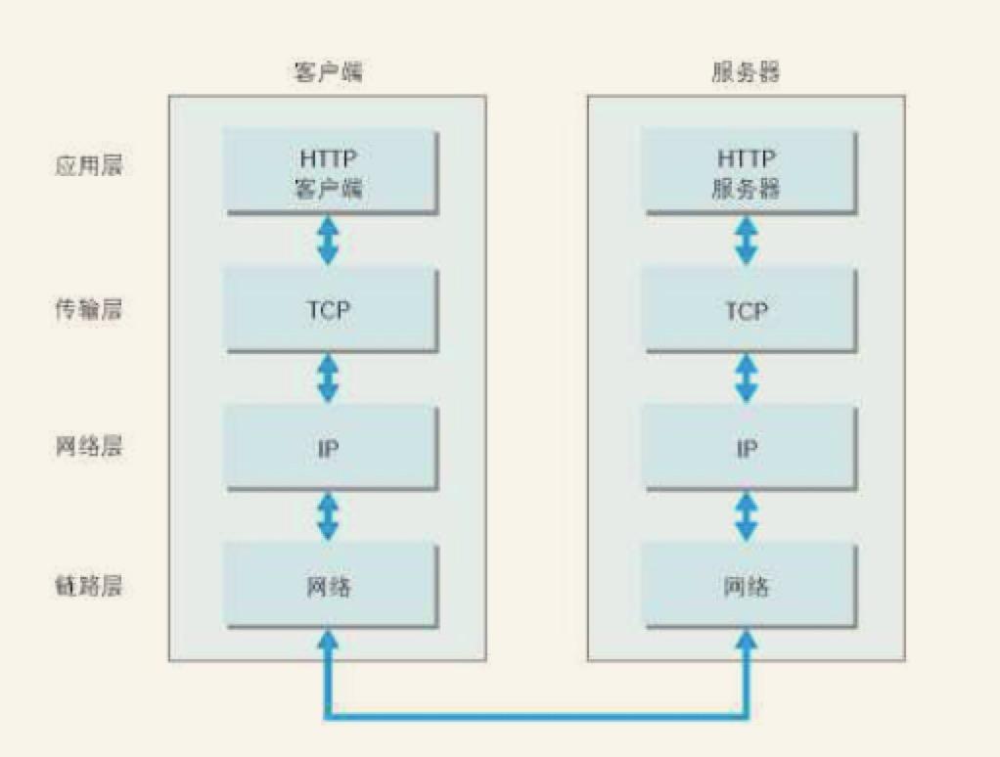
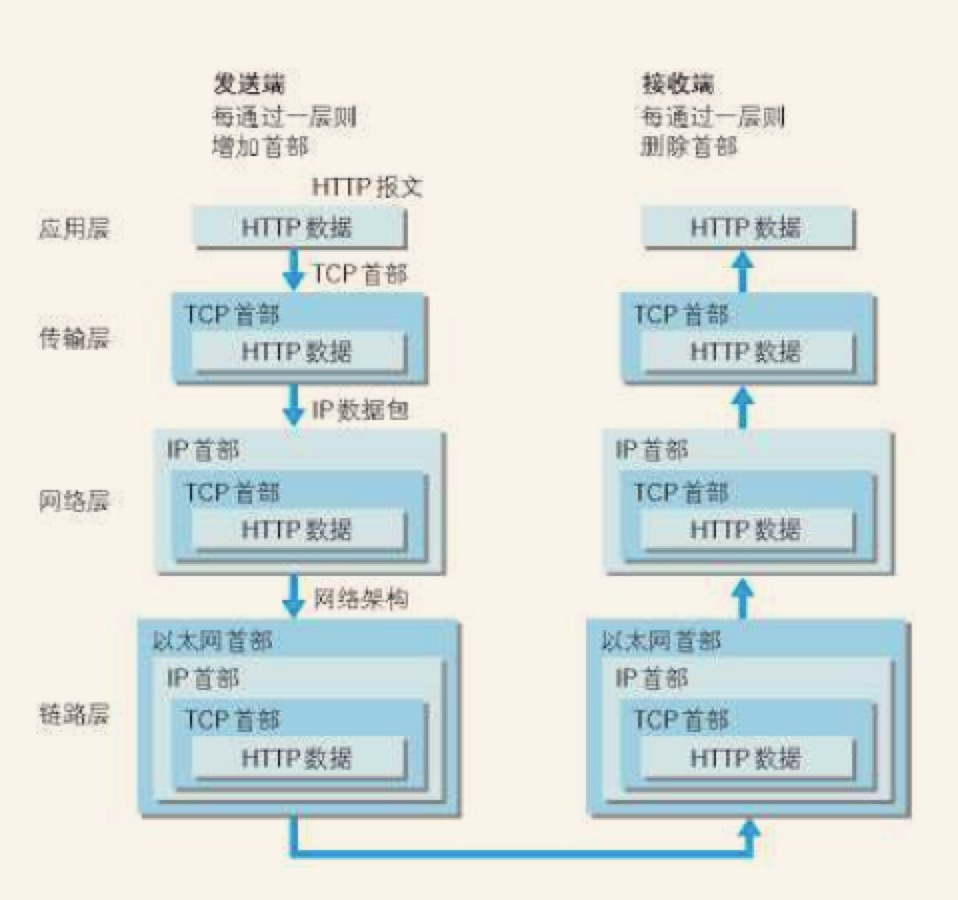
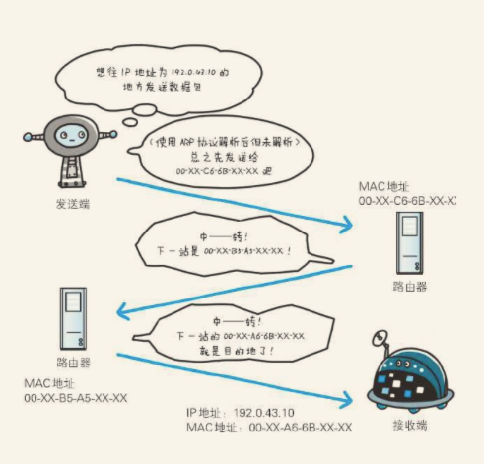
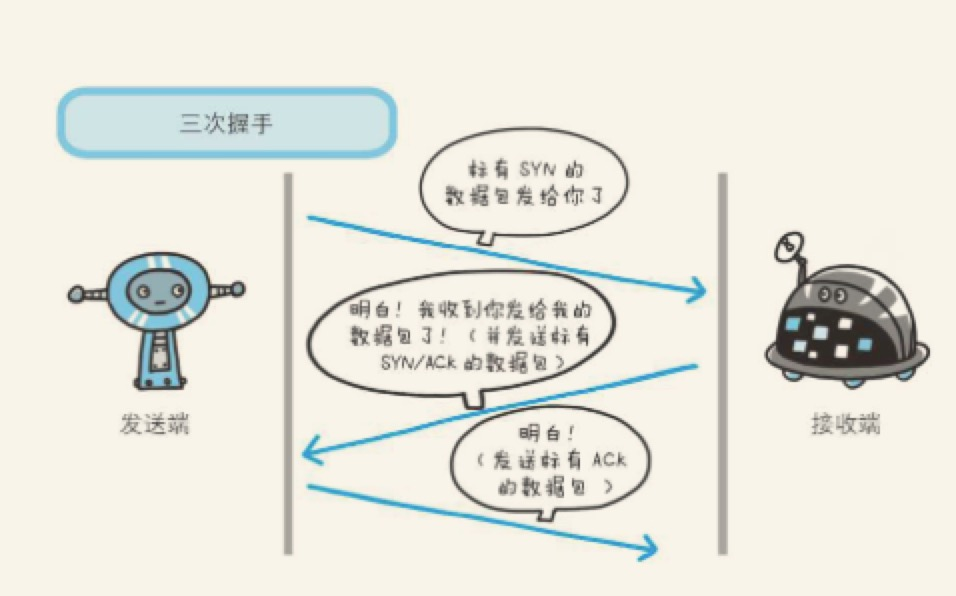
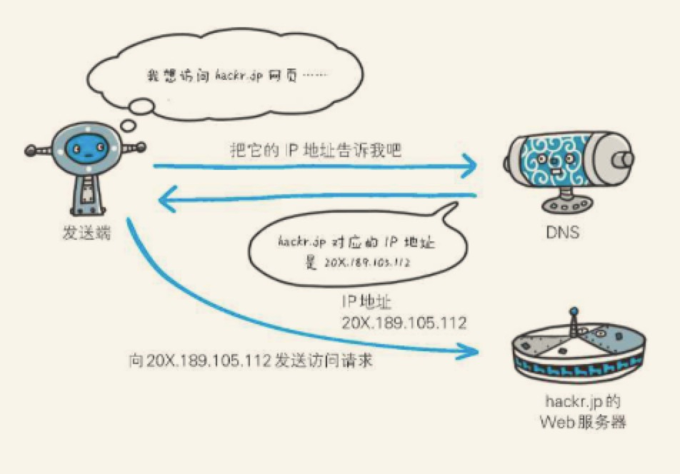
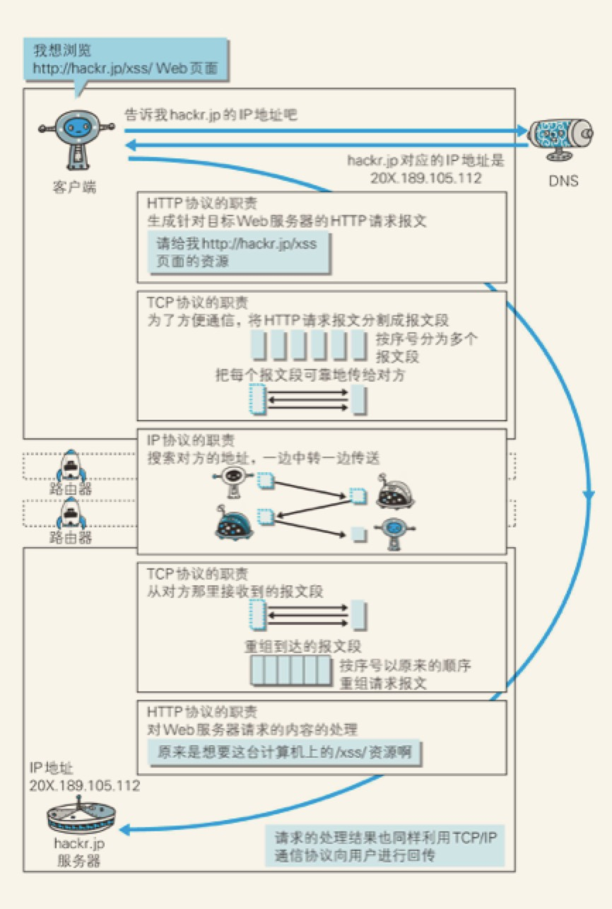
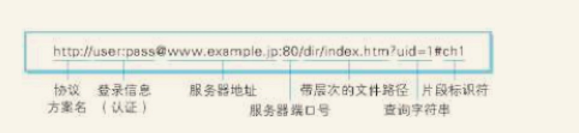

第一篇:了解Web及网络基础
1.web是建立在何种技术之上？
当我们再网页浏览器的地址栏输入URL时，web浏览器从web服务器获取文件资源等信息，从而显示出web页面。
web使用一种名为HTTP（超文本传输协议） 的协议作为规范，完成从客户端到服务端等一系列运作流程。可以说，web是建立在HTTP协议上通信的。
2.网络基础 TCP/IP
为了理解HTTP，我们有必要了解一下TCP/IP协议族。
通常使用的网络（包括互联网）是在TCP/IP协议族的基础上运作的。而HTTP属于它内部的一个子集。
2.1 TCP/IP 协议族
计算机与网络设备要相互通信，双方就必须基于相同的方法。比如，如何探测到通信目标、由哪一边先发起通信、使用哪种语言进行通信、怎样结束通信等规则都需要事先确定。不同的硬件、操作系统之间的通信，所有的这一切都需要一种规则。而我们就把这种规则成为协议。

图：TCP/IP是互联网相关的各协议族的总称
协议中存在各式各样的内容。从电缆的规格到IP地址的选定方法、寻找异地用户的方法、双方建立通信的顺序，以及Web页面显示需要处理的步骤等。
像这样把与互联网相关联的协议集合起来总称为TCP/IP。
2.2 TCP/IP 的分层管理
TCP/IP 协议族里重要的一点就是分层。
- 应用层
- 传输层
- 网络层
- 数据链路层
TCP/IP协议族各层的作用如下：
应用层：
应用层决定了向用户提供应用服务时通信的活动。
TCP/IP协议族内预存了各类通用的应用服务。比如，FTP（File Transfer Protocol,文件传输协议）和DNS（Domain Name System,域名系统）服务就是其中两类。
HTTP 协议也处于该层
传输层：
传输层对上层应用层，提供处于网络连接中的两台计算机之间的数据传输。
在传输层有两个性质不同的协议：TCP（传输控制协议）和UDP（用户数据报协议）。
网络层：
网络层用来处理在网上流动的数据包。数据包是网络传输的最小数据单位。该层规定了通过怎样的路径（所谓的传输路线）到达对方计算机，并把数据包传送给对方。
与对方计算机之间通过多台计算机或网络设备进行传输时，网络层所起的作用就是在众多的选项内选择一条传输路线。
链路层：（又名数据链路层，网络接口层）
用来处理链接网络的硬件部分。包括控制 操作系统、硬件的设备驱动、NIC（网络适配器，即网卡），及光纤等物理可见部分。硬件上的范畴均在链路层的作用范围之内。
2.3 TCP/IP通信传输流

利用TCP/IP协议族进行网络通信时，会通过分层顺序与对方进行通信。发送端从应用层往下走，接收端从链路层往应用层上走。
接着，为了传输方便，在传输层（TCP协议）把从应用层处接收到的数据（HTTP请求报文）进行分割，并在各个报文上打上标记序号及端口号后转发给网络层。
在网络层（IP协议），增加作为通信目的地的MAC地址后转发给链路层。
接收端的服务器在链路层接收到数据，按序往上层发送，一直到应用层。当传输到应用层，才能算真正接收到由客户端发送过来的HTTP请求。

发送端在层与层之间传输数据时，每经过一层时必定会被打上一个该层所属的首部信息。反之，接收端在层与层传输数据时，没经过一层时会把对应的首部消去。
这种把数据信息包装起来的做法成为封装。
3.与HTTP关系密切的协议：IP、TCP和DNS
负责传输的IP协议
按层次分，IP 网际协议位于网络层。几乎所有的使用网络的系统都会用到IP协议。可能有人会把"IP"和"IP地址"搞混，"IP"其实是一种协议的名称。
IP协议的作用是把各种数据包传输给对方。而要保证确实传送到对方那里，则需要满足各类条件。其中两个重要的条件是IP地址和MAC地址。
IP地址指明了节点被分配到的地址，MAC地址是指网卡所属的固定地址。IP地址可以和MAC地址进行配对。IP地址可变换，但MAC地址基本不会改变。
使用ARP协议凭借MAC地址进行通信
IP间的通信依赖MAC地址。在网络上，通常是经过多台计算机和网络设备中转才能连接到对方。而在进行中转时，会利用下一站中转设备的MAC地址来搜索下一个中转目标。这时，会采用ARP协议。ARP协议是一种用以解析地址的协议，根据通信方的IP地址就可以反查出对应的MAC地址。
没人能全面掌握互联网中的传输状况
在到达通信目标前的中转过程中，那些计算机和路由器等网络设备只能获悉很粗略的传输路线。
这种机制称为路由选择，有点像快递公司的送货过程。我们只知道具体用的什么快递，在哪中转站，倒是不知道具体走的什么路线，用的什么工具等等。

确保可靠性的TCP协议
按层次分，TCP位于传输层，提供可靠的字节流服务。
所谓的字节流服务是指，为了方便传输，将大块数据分割成以报文段为单位的数据包进行管理。而可靠的传输服务是指，能够把数据准确可靠的传给对方。TCP协议为了更容易传送大数据才把数据分割，而且TCP协议能够确认数据最终是否送达到对方。
确保数据能达到目标
为了准确无误地将数据传送到目标处，TCP协议采用了三次握手策略。用TCP协议把数据包送出去后，TCP不会对传送后的情况置之不理，它一定会向对方确认是否成功送达。握手过程中使用了TCP的标志SYN和ACK
发送端首先发送一个带SYN标志的数据包给对方。接收端收到后，回传一个带有SYN/ACK 标志的数据包以示传达确认信息。最后，发送端再回传一个带ACK标志的数据包，代表“握手”结束。

若在握手过程中某个阶段莫名中断，TCP协议会再次以相同的顺序发送相同的数据包。
4.负责域名解析的DNS服务
DNS 服务是和HTTP协议一样位于应用层的协议。它提供域名到IP地址之间的解析服务。
用户通常使用主机名或域名来访问对方的计算机，而不是直接通过IP地址访问。因为与IP地址的一组纯数字相比，用字母配合数字的表示形式来指定计算机名更符合人类的习惯。

5.各种协议与HTTP协议的关系
我们可以通过这张图来了解下IP协议、TCP协议、和DNS服务在使用HTTP协议的通信过程中各自发挥了哪些作用

6.URI和URL
与URI（统一资源标识符）相比，我们更熟悉URL（统一资源定位符）。URL正是使用WEB浏览器等访问WEB页面时需要输入的网页地址。
统一资源标识符
URI是Uniform Resource Identifier 的缩写。
Uniform
规定统一的格式可方便处理多种不同类型的资源，而不用根据上下文环境来识别资源指定的访问方式。
Resource
资源的定义是“可标示的任何东西”。除了文档文件、图像或服务等能够区别于其他类型的，全都可作为资源。另外，资源不仅仅可以是单一的，也可以说是多数的集合体。
Identifier
表示可标识的对象。也成为标识符。
综上所述,URI就是由某个协议方案标识的资源的定位标识符。协议方案是指访问资源所使用的协议类型名称。
URI用字符串标识某一互联网资源，而URL表示资源的地点。可见URL是URI的子集。
URI格式

登录信息
指定用户名和密码作为从服务器端获取资源时必要的登录信息。此项是可选。
服务器地址
使用绝对URI 必须指定待访问的服务器地址。
服务器端口号
指定服务器连接的网络端口号。此项也是可选项，若用户省略则自动使用默认端口号。
带层次的文件路径
指定服务器上的文件路径来定位特指的资源。
查询字符串
针对已指定的文件路径内的资源，可以使用查询字符串传入任意参数，此项可选。
片段标识符
使用片段标识符通常可标记出已获取资源中的子资源。但在RFC中并没有明确规定其使用方法。该项可选。
写在最后
因为本身写博客比较少，写作能力又有点弱。又特别想把看过的东西写下来，所以这篇博客大部分都是按着原书上的字用键盘打出来的。我想也许写的多了慢慢也就会有自己的语言了吧。